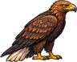
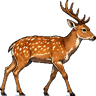
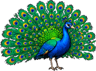
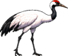
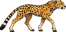
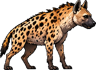

DOSSIER PERSONNEL · CONFIDENTIEL RH
Statistiques
Résumé
Parties 0
Collection 0/40
Succès 0/12
×
Fiche signalétiqueRÉF. 0042

DANIEL
Cadre ZooLife™
filiale de la vallée
filiale de la vallée
PSEUDO
Daniel Modifier
MATRICULE
ZL-2026-0042
EN POSTE DEPUIS
12/11/2026
PARTIES
0
GRADE
Stagiaire
« Un dossier vide est un dossier sans faute. Profitez-en, ça ne durera pas. »
Hubert de la Marge
votre supérieur
votre supérieur
ÉVALUATION ANNUELLE · AUCUNE DONNÉE
Votre dossier est encore vierge.
Chaque partie le remplit : records, courbes, espèces découvertes, succès. Trois façons de commencer :
MISSION 01
Suivre le tutoriel
Hubert vous montre comment recruter, construire et ouvrir votre zoo. 15 minutes.
Commencer ›
MISSION 02
Signer une première partie
Une partie classique contre une IA en Facile. Premier à 120 de réputation.
Jouer ›
MISSION 03
Tenter le défi de la semaine
La même partie pour tous. Votre score entre au classement.
Voir le défi ›
Collection à découvrir0 / 40









40 espèces sur 4 continents. Chaque espèce installée apparaît ici.
Succès à obtenir0 / 12
1er
RN
J9
+ 9 autres, jusqu'à Arche de ZooLife :
installer les 40 espèces.
installer les 40 espèces.